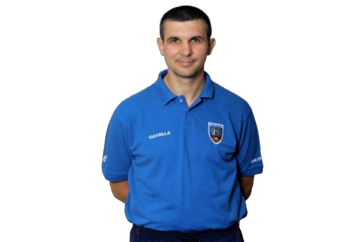

Cristian Achim
Antrenor principal
Cristian Achim este un antrenor dedicat și pasionat de baschet, cunoscut pentru abilitățile sale tactice și motivaționale. Cu o carieră extinsă în sportul cu mingea la coș, el și-a adus contribuția la dezvoltarea jucătorilor și echipelor din diferite categorii de vârstă și nivel de performanță. Stilul său de antrenament se concentrează pe tehnici de bază, strategie de joc și o abordare holistică pentru a dezvolta abilitățile individuale și colective ale jucătorilor. Prin dedicarea sa față de sport și dezvoltarea continuă a echipei, Cristian Achim este un mentor respectat în comunitatea baschetului.